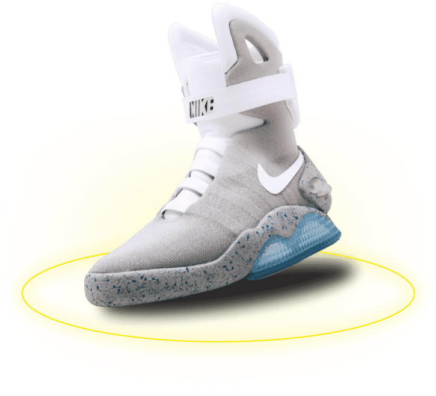
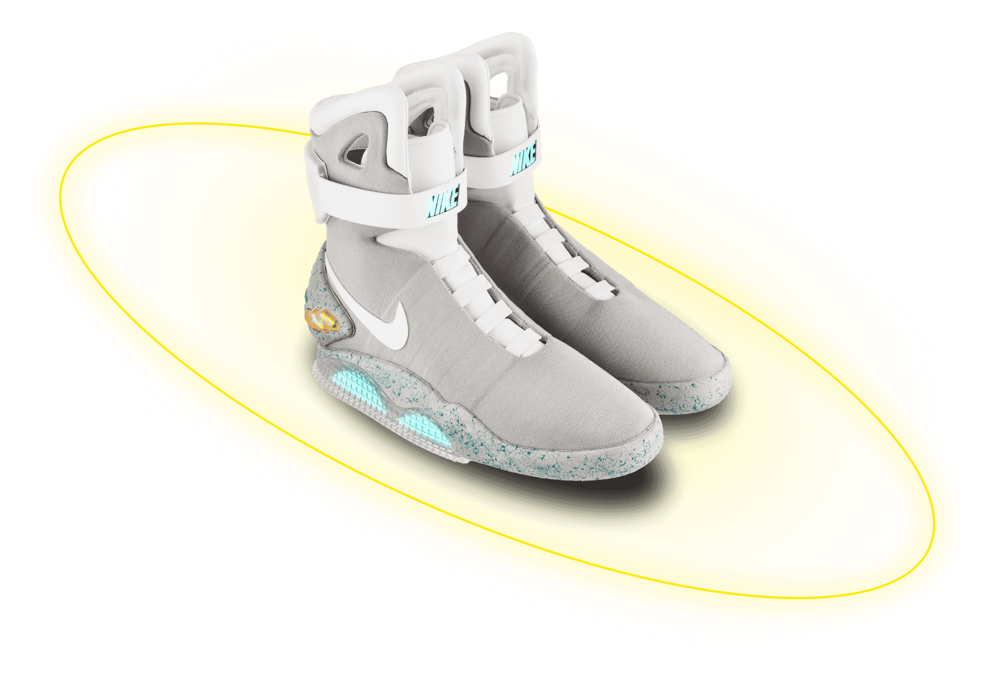
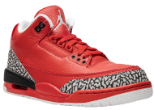
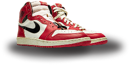

Футуристический дизайн
Nike Air Mag выделяются своим уникальным и оригинальным дизайном, который сразу же привлекает внимание. Эта модель создана для тех, кто ценит стиль, вдохновленный наукой и фантастикой

Это не просто кроссовки — это шаг в будущее. С уникальным дизайном и передовыми технологиями, эти кроссовки вдохновлены легендарной киноделией и готовы сопровождать вас в любых приключениях.

Nike Air Mag — это кусочек киноистории и технологического прогресса. Если вы ищете уникальную пару кроссовок, которая станет не только стильным аксессуаром, но и ценным дополнением вашей коллекции, Nike Air Mag — идеальный выбор.
36 490 ₽
Nike Air Mag выделяются своим уникальным и оригинальным дизайном, который сразу же привлекает внимание. Эта модель создана для тех, кто ценит стиль, вдохновленный наукой и фантастикой
Инновационная система автоматической шнуровки обеспечивает идеальную фиксацию обуви на ноге без необходимости вручную завязывать шнурки, что значительно повышает комфорт
Nike Air Mag были выпущены в ограниченном количестве, что делает каждую пару желанным объектом для коллекционеров и любителей уникальных кроссовок
Благодаря светодиодной подсветке, кроссовки выглядят эффектно в темное время суток. Это придает им еще больше оригинальности и уникальности
Модель предлагает высокий уровень комфорта благодаря качественной амортизации и поддержке стопы, что делает их идеальными для длительного ношения
Nike Air Mag изготовлены из высококачественных синтетических материалов, которые обеспечивают долговечность, устойчивость к износу и легкость в уходе
Подошва кроссовок обладает отличным сцеплением с различными поверхностями, что обеспечивает надежность при ходьбе и беге
Nike Air Mag стали культовыми благодаря своему появлению в кино "Назад в будущее 2", что подчеркивает их историческую и культурную значимость
Кроссовки легко вписываются в различные стили одежды, позволяя создавать уникальные образы. Они могут дополнить как спортивный, так и повседневный стиль





